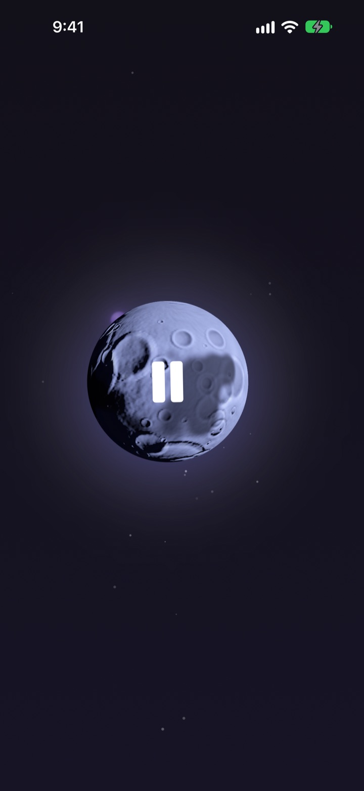
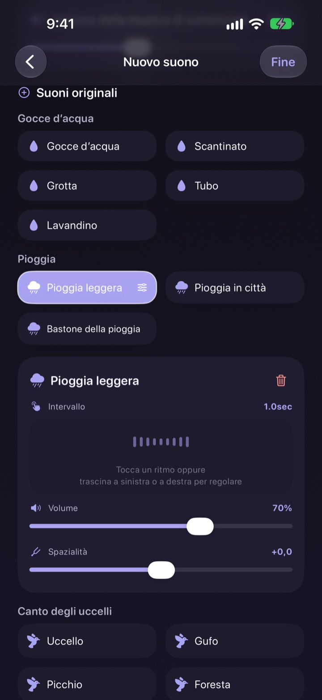
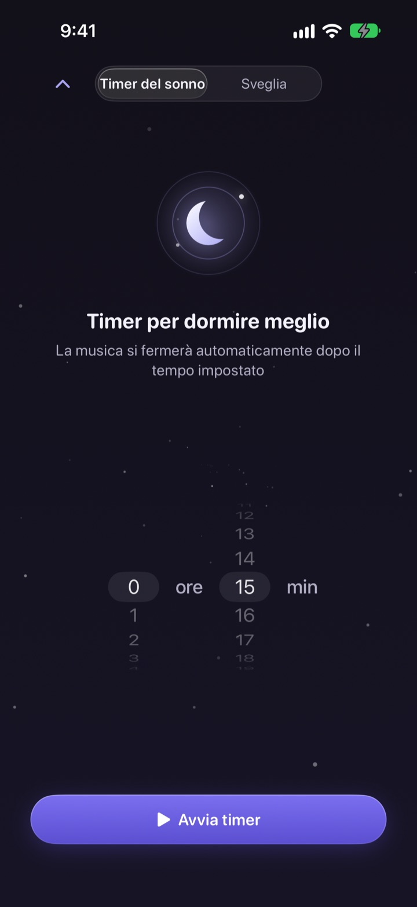
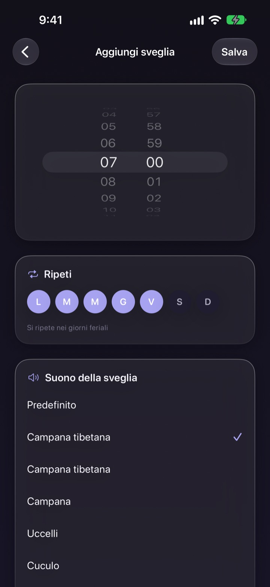
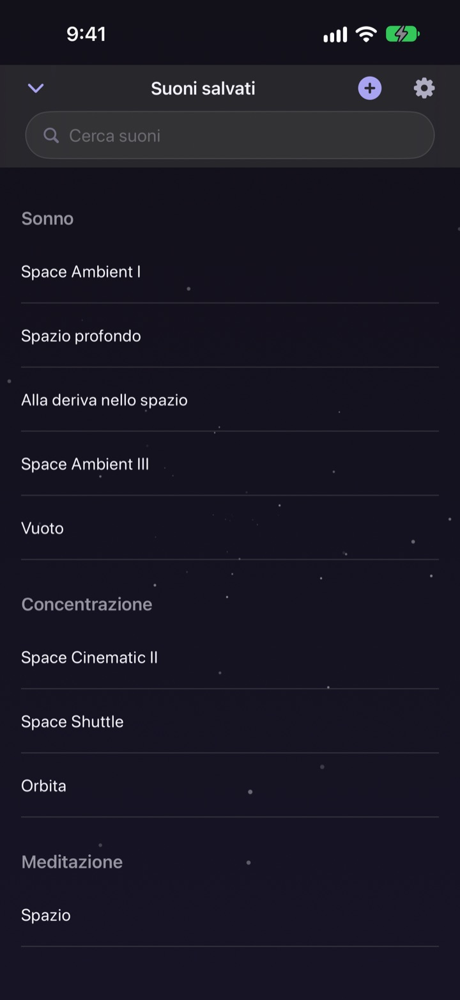

Non passare la notte
a cercare il suono giusto
Sovrapponi una volta pioggia, gocce d’acqua e una campana tibetana in un suono tutto tuo. Dalla notte dopo basta toccare la luna.
Tutti i suoni si ascoltano gratis. Per iPhone e iPad.

Ti è mai capitato di perdere un’ora a cercare qualcosa per addormentarti?
La pioggia è troppo monotona, le onde troppo forti e il video che metti si interrompe per una pubblicità nel cuore della notte. Con Dalbit sovrapponi tu i suoni che ti piacciono finché non trovi quello giusto per te, e lo tieni dietro un’unica luna.
Costruisci il tuo suono a strati
Sovrapponi pioggia, gocce d’acqua, canto degli uccelli e campane tibetane. Per ogni strato regoli volume, frequenza e il punto da cui lo senti, poi aggiungi onde o pianoforte come musica di sottofondo.
Dai un nome al mix, salvalo e ritrovalo ogni sera.

Si spegne senza svegliarti
Il timer del sonno non taglia mai il suono di colpo: lo abbassa piano piano, così la fine non ti sveglia.
Il suono continua a schermo spento o in un’altra app, e se non tocchi nulla lo schermo si scurisce da solo.

Al mattino, un risveglio dolce
Imposta sveglie con una campana tibetana, una ciotola tibetana, il canto degli uccelli o un cuculo, e ripetile nei giorni che scegli.

Una luna per fare tutto
Tocca la luna per riprodurre, toccala di nuovo per mettere in pausa. Scorri di lato per cambiare suono, in alto per il timer del sonno, in basso per i suoni salvati.
Se un suono ti piace, tieni premuta la luna per aggiungerlo ai preferiti.

Si comincia in tre passi
- 1
Tocca la luna
Apri l’app, tocca la luna e il suono parte subito.
- 2
Scorri di lato
Vai avanti finché non trovi un suono che ti piace.
- 3
Imposta il timer e sdraiati
Scorri in alto, scegli un tempo e poi il suono svanisce piano.
Cosa fa la luna
- Tocco
- riproduci, pausa
- Scorrere di lato
- suono successivo
- Scorrere in alto
- timer del sonno e sveglie
- Scorrere in basso
- suoni salvati
- Tenere premuto
- aggiungi ai preferiti
Puoi anche mettere in pausa e riprendere dai controlli di riproduzione della schermata di blocco.
Ascoltare è gratis. Premium serve per creare di più.
Gratis
- Tutti i suoni
- Sovrapporre suoni per creare il tuo
- Fino a tre mix salvati
- Timer del sonno in dissolvenza
- Sveglie con suoni delicati
- Preferiti
Dalbit Premium
- Crea e salva tutti i mix che vuoi
Abbonamento mensile a rinnovo automatico con prova gratuita
L’abbonamento si rinnova automaticamente se non lo annulli almeno 24 ore prima della fine del periodo in corso, e l’addebito parte al termine della prova gratuita. Si applicano i termini d’uso standard di Apple (EULA).
Domande frequenti
Come avvio e cambio i suoni?
Tocca la luna nella schermata principale per avviare e toccala di nuovo per fermare. Scorri di lato per un altro suono, in alto per il timer del sonno e in basso per la tua libreria.
Il suono si ferma se spengo lo schermo?
No. Continua a schermo spento o se passi a un’altra app. Per fermarlo tocca di nuovo la luna o usa i controlli della schermata di blocco.
Cosa succede quando finisce il timer?
Il suono non si interrompe di colpo: si abbassa poco a poco e poi si ferma, per non svegliarti.
La sveglia non suona.
Quando crei la prima sveglia, l’app chiede il permesso per le sveglie. Controlla che sia attivo in Impostazioni > Dalbit.
Dove vengono salvati i miei mix?
Mix, sveglie e impostazioni restano solo su questo dispositivo. Se elimini l’app, vengono eliminati anche loro.
Cosa posso usare gratis?
Tutti i suoni, la sovrapposizione e fino a tre mix personali. Anche timer del sonno e sveglie sono gratis. Premium toglie il limite ai mix.
Come annullo l’abbonamento?
Vai in Impostazioni > Account Apple > Abbonamenti, scegli Dalbit e annulla. Se non annulli almeno 24 ore prima della fine del periodo in corso, si rinnova automaticamente.
Ho cambiato telefono e l’abbonamento è sparito.
Accedi con lo stesso Account Apple, apri la schermata dell’abbonamento in Dalbit e tocca Ripristina acquisti.
Come segnalo un bug o propongo una funzione?
Usa l’invio di feedback nelle impostazioni dell’app o scrivici all’indirizzo qui sotto. Di solito rispondiamo entro pochi giorni.
Domande o idee? Scrivi a mizzking75@gmail.com.